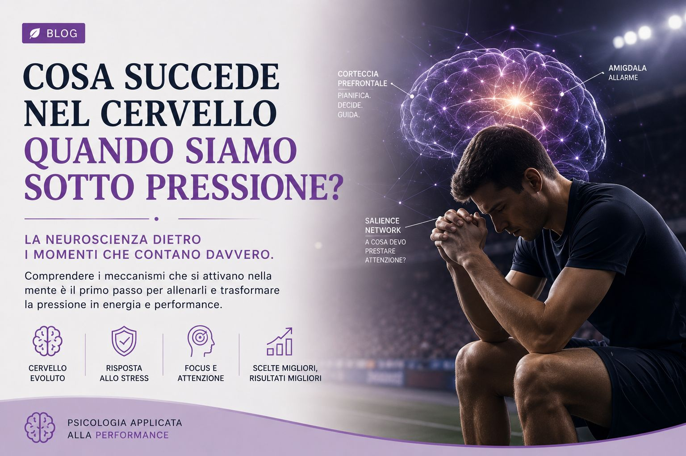
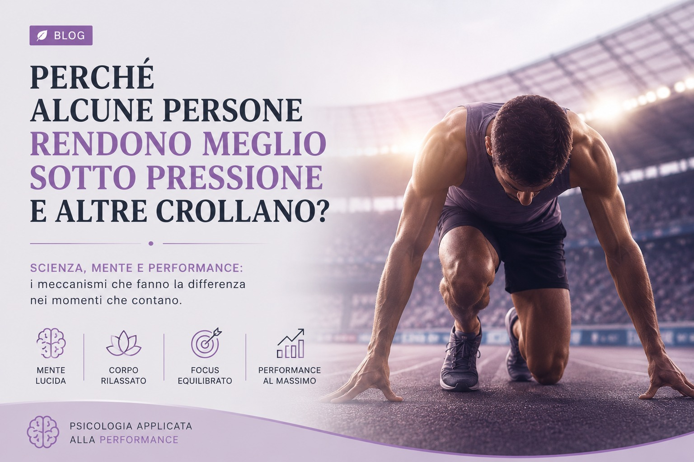
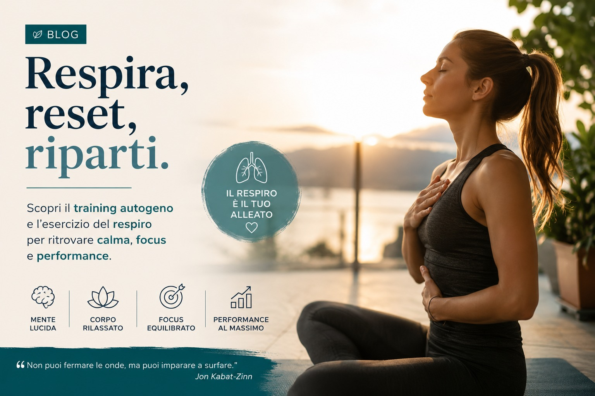

Blog
Riflessioni, strumenti e storie sulla psicologia della performance.
Per chi vuole allenare anche la mente.

Cosa succede nel cervello quando siamo sotto pressione?
La neuroscienza dietro i momenti che contano davvero: amigdala, corteccia prefrontale, cortisolo e memoria di lavoro sotto stress.
Leggi l'articolo →
Perché alcune persone rendono meglio sotto pressione e altre crollano?
Scopri la scienza dietro la performance sotto pressione: challenge vs threat, reinvestment theory e strategie per allenare la risposta allo stress.
Leggi l'articolo →
Respira, reset, riparti: un viaggio nel training autogeno
Scopri cos'è il training autogeno, come praticare l'esercizio del respiro e perché atleti e professionisti lo usano per gestire ansia e stress con soli dieci minuti al giorno.
Leggi l'articolo →Altri articoli in arrivo
Nuovi contenuti su mental training, psicologia della performance e crescita personale vengono pubblicati regolarmente.
La teoria è utile.
La pratica cambia tutto.
Ogni articolo nasce dall'esperienza sul campo. Se un tema ti riguarda, il passo successivo è trasformarlo in un percorso concreto.